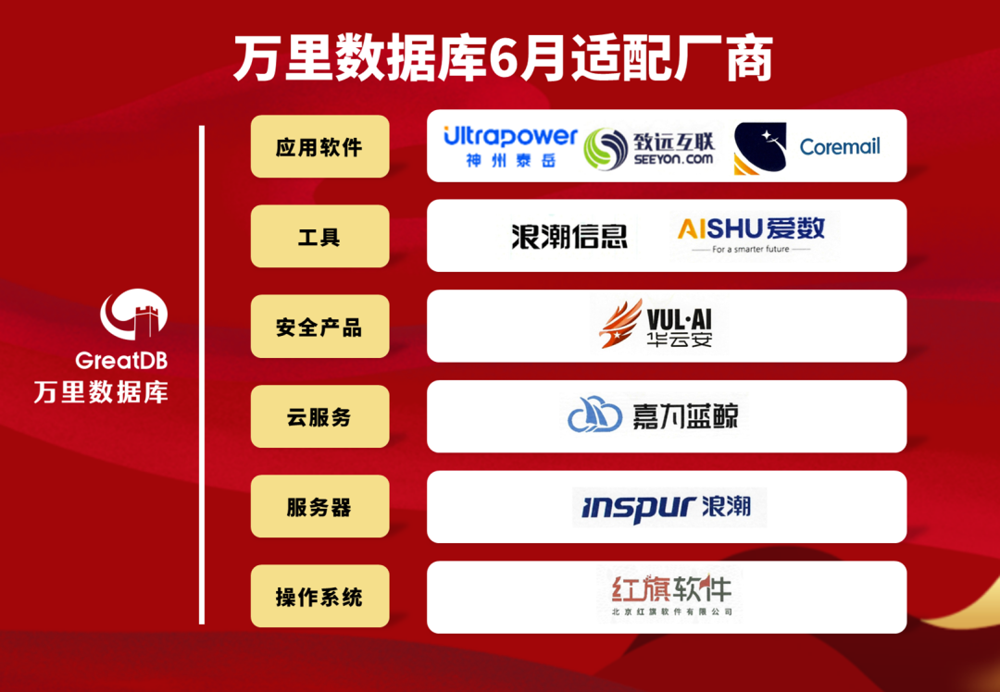
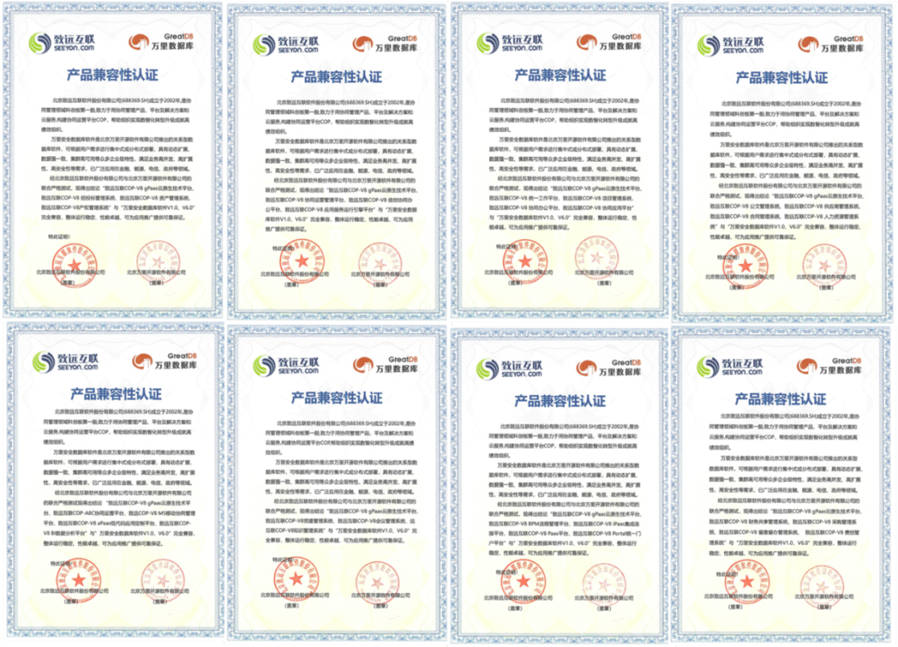

兼容月报丨发力软件应用创新生态建设！万里数据库6月完成51款产品适配认证
共筑国产生态圈
数字基础设施的建设离不开产业链上下游生态企业的携手共进。万里数据库作为国产数据库领先品牌，自成立以来，积极参与信创产业生态建设，在国产生态兼容适配建设、生态融合等方面持续发力，全面推进从芯片到操作系统、服务器、中间件及各类应用软件的全方位兼容适配工作，共筑国产生态圈。
基于此背景，万里数据库未来将持续发布生态适配月报，诚邀广大产业链伙伴，共同见证基于万里安全数据库GreatDB的生态建设成果。
2024年6月，万里数据库与浪潮计算机、神州泰岳、致远互联、华云安、红旗软件、上海爱数、嘉为蓝鲸等10家生态伙伴累计51款产品完成兼容适配，充分彰显出万里安全数据库软件GreatDB在国产生态体系中的高适配性、高成熟度和高稳定性，以及万里数据库拓展并建设完善的国产生态体系的坚定决心和实力。

此次适配产品覆盖服务器、操作系统、云平台、安全产品、工具、应用软件等生态多元领域。测试结果表明：万里安全数据库GreatDB与上述产品完全兼容，运行稳定高效。GreatDB实现了从底层基础设施支撑到上层业务应用在内的国产核心软硬件产品的全方位兼容适配，致力于构建全国产创新生态体系，助推信创产业稳步发展。
携手致远互联，打造国产软件应用创新生态
6月适配认证中，万里安全数据库GreatDB与多家上下游生态伙伴的重点产品完成了兼容测试，尤其在软件应用创新生态建设中全面发力。
万里安全数据库GreatDB与致远互联旗下的COP-V8 gPaas云原生技术平台、协同运营平台、信创协同办公平台、BPM流程管理平台财务共享管理系统、公文管理系统、党建管理系统等30款产品完成兼容互认证。测试期间，安全数据库GreatDB运行稳定、安全可靠、性能卓越，双方产品兼容度高，可以满足党政机关、企事业单位等更多用户的关键性业务需求，为国产软硬件应用推广提供了可靠的技术保证。

下一步，万里数据库将与致远互联持续深化合作，通过产品共创、联合方案、资源共享等多种方式，打造一体化信创生态解决方案，赋能多元应用场景，共同推进国产软件应用创新发展与生态繁荣，助力千行百业数智化转型。
数据库系统作为信创产业链上的重要环节，对整个信创生态体系的构建起到重要的承上启下作用。
万里数据库坚持自主创新，打造安全可靠的自主数据库产品和解决方案，安全数据库GreatDB已连续通过安全保障级(EAL4增强级)认证和首批安全可靠测评，可帮助行业用户快速、便捷地实施数智化升级与国产化改造。
作为国产生态发展的积极建设者与推动者，万里数据库将聚合多元生态力量，携手更多合作伙伴共同推动数字化转型进程，满足千行百业更深入的业务数字化需求，提供高效、稳定、易用的产品、技术和解决方案，助力我国数字经济与新基建的蓬勃发展。